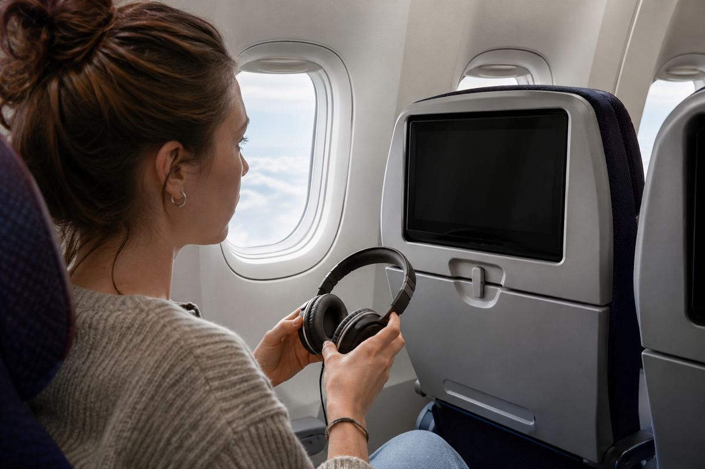

机上连接 / EXPLAINED
美联航座椅屏幕接入个人Spotify，需留意适用航班
通过二维码配对读取个人内容，需匹配屏幕和网络条件，计划明年春扩至约半数机队。

美联航11月5日宣布，适用航班的旅客可在座椅屏幕登录自己的Spotify账户，流媒体播放音乐和视频等内容。旅客用手机扫描屏幕二维码并验证，即可读取个人播放列表和收藏。这把机上娱乐从航空公司统一选好的内容，扩展到接续个人日常使用。
从内容合集走向个人账户
美联航是通过美国多个枢纽运营国内及国际航班的大型航司。Spotify提供音乐、播客及部分视频和有声书。美联航自2025年6月就提供精选Spotify内容，如今增加个人推荐、收藏、续播和保存新内容。因此这是既有合作使用方式的扩展，而非首次出现Spotify服务。
功能依靠Starlink连接，但安装Starlink不代表一定同时具备适用座椅屏幕与应用整合。网络设备、娱乐硬件和软件部署是不同条件。公司计划明年春将Spotify扩至半数机队，这是未来目标，并非公告当天全机队可用。仅凭某班飞机有Wi-Fi，无法保证能在座椅屏幕登录。
手机端验证
流程是在座椅屏幕打开应用、扫描二维码，再在手机确认账户，必要时在手机登录。手机还可选作播放遥控器。公司称飞行中可随时退出，航班结束后自动退出。不过共用屏幕仍值得在换座或结束使用时确认会话关闭，同时仔细阅读认证页面。
内容和功能因Spotify套餐及市场而异，能连接账户不代表所有视频和有声书都免费。订阅权限与地区供应范围可能影响使用。它可能减少对手机播放的依赖，但实际便利性取决于屏幕和连接质量。此次是产品公告，不是本刊在各航线上测得的稳定性或响应速度结果。
美联航还计划2027年底完成全机队Starlink安装，并把座椅屏幕增至219000台以上。网络安装期限与Spotify推广时间不同，不能推断全部娱乐功能同日上线。旅客应确认自己的航班和套餐是否适用，也可准备离线内容，在体验连接服务时保留稳定备选。